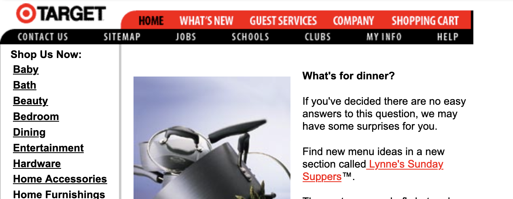
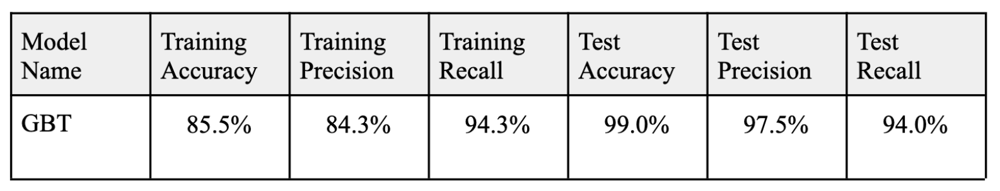

Entity Resolution with Gradient Boosted Trees
Introduction
In 2023, I finished my Master of Science in Data Science at the University of Virginia. I completed a capstone project as part of this program which I will share here.
This is meant to be an overview and summary of the problem in layman’s terms. If a more technical and comprehensive view is desired, please review my code on github or my final project write-up.
My project was sponsored by the Internet Archive. Maxwell Jones (my UVA colleague) and I worked with 2 contacts at Internet Archive who gave us guidance throughout the process and provided us internal access to resources. For those who may not know, the Internet Archive is best known for its wayback machine - archiving webpages on the internet. As an example, here is what Target.com looked like in March 2, 2000:

Our project does not deal with the webpages, but focuses on the other resources that the Internet Archive offers - specifically their collection of books (over 7 million as of July 2023). Our contacts wanted to match the books in the Internet Archive to books cited on Wikipedia.
What are the implications of this? Well, if you were researching a topic and came across a book, you could gain access to a FREE copy of this book given a link to the internet achive in the wikipedia citation of your article. Given the vast collection of books in the Internet Archive, this could be a huge asset to the world providing free resources to everyone visiting Wikipedia.
So, what’s the problem?
Well, all wikipedia citations are not created equal. Some are very descriptive and include things like the ISBN number that allow clean book matching, but what about other citations which only have the book title and the book author? Also, there are often misspellings and inconsistent abbreviations for book meta data like the author or publisher. Can we provide a match (with confidence) given these cases?
So in essence the problem is quantifying uncertainty in entity resolution of Internet Archive Books and Wikipeida Citations. Our algorithm will determine:
- Whether or not a wikipedia citation book match exists in the Internet Archive database.
- Output matches given a high probability threshold.
Analysis Pipeline
In order to link the Internet Archive books to wikipedia links, a few things need to happen…
- Need to download and scrape every book citation on Wikipedia and gain access to the database of 7 million books on the Internet Archive (availabe via API).
- Combine these two resources in a way that can be trained.
- Divide into a training and testing set
- Train an algorithm to match books which outputs an accurate match probability
- Implement this algorithm as a function which inputs a wikipedia citation and outputs book matches from the Internet Archive database given a high probability threshold.
Problems that came up through the process…
These were several hurdles and problems that came up in our path to a workable solution. Please consult the paper for these details. Generally, the problems included bias in the training data because of duplicate books stored in the Internet Archive, regularization of a feature space of over 200+, handling missing data among key features, and looking for patterns and applying machine learning methods to improve an initial low recall rate.
Ending Solution
In the end, we manually created a test set of 800+ observations. We utilitzed the Levenstien distance for text matching and used 3 different methods of matching dependent on EDA of features: full matching, sort matching, and partial matching. We tuned the hyperparameters of the GBT algorithm which naturally accounts for missingness.

We tested several algorithms with 5-fold crossvalidation, but our best model found strong success with a 97.5% test precision rate, a 94% test recall rate, and 99% test accuracy. We fully implemented our solution in python here.
Typically, the training metrics find more success than the test metrics in other data science problems, but in our case there was bias in our training set where many more matches existed in the training set than the data indicated. This was the case because duplicate books existed in the internet archive database with unique links.